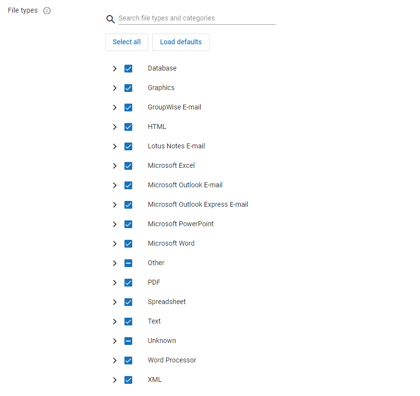
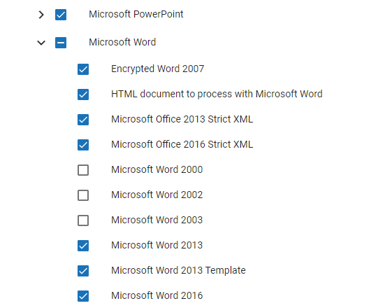

Note: There are additional filtering settings available in
You can view and modify filtering settings for a Processing case in
Follow the instructions below to learn how to view and modify filtering settings in
|
|
Note: There are additional filtering settings available in |
For a visual overview of Filtering settings, see the below video.
To view and/or modify filtering settings:
Open Case Management and locate the Processing case whose settings you would like to view or modify.
Click the hamburger icon corresponding to the needed case.

From the menu that appears, select Case Settings.
Click the Ingestion tab at the top of the Case Settings work area.

On this page you can view a selection of ingestion and filtering settings. To view and/or modify the full set of filtering settings available in
|
|
Note: You can access this button by scrolling down to the bottom of the Filtering card, or by selecting the Filtering link on the right side of the Ingestion page. |
Update settings as needed. See the table below for more information about these settings.
When finished, click the Save button in the top-right corner of the page. If you exit without saving, any changes you made will be lost.
|
|
Note: You can discard any changes you have made by clicking the Cancel button in the top-right corner of the page or by exiting the page. |
Review the table below to learn more about the various filtering settings you can update in
|
Option |
Description |
||||
|---|---|---|---|---|---|
|
Deduplication |
Determine if duplicate documents should be identified and removed from the data set (document families will be maintained). The selected scope determines whether duplicates are identified across the entire case or within each custodian separately. To use deduplication, ensure the slider at the top is set to Deduplication is on.
From the de-duplication drop-down menu, select one of the following:
|
||||
|
NIST matches |
During the filtering phase, document hashes are compared to the hashes in the NIST database. If the document hash is found, it is marked as a NIST match and is not promoted to Review. NIST removal matching applies only to the parent document or loose documents. It does not apply to child documents. If a parent document is a NIST match, the entire family is then removed including its children. NIST match removal is applied to documents that were slated to be promoted after applying the date, file type, and extension filters. For information about installing and using the optional NIST databases and the For more information about using hash lists and configuring |
||||
|
Date range(s) |
Date filters are applied to parent documents only. Date filter dates are in Coordinated Universal Time (UTC). For emails, Sent Date is used. There is no alternate date fall back. All emails are included that do not have a Sent Date (draft emails, etc.) as well. For non-emails, Last Modified Date is used. Any item that does not have a Last Modified Date is included. Configure restrictive date ranges to determine what documents get pushed to Review. Sent Date is used for email file types whereas Last Mod Date (file system) is used for non-emails. Filtering is applied at the parent level and families are maintained. By default, all document families are promoted to Review unless the option Specify date ranges for importing document families is chosen.
|
||||
|
File types |
Export these File Types: Filters determine the types of files that you can bring into an electronic discovery job during an File Type and File Extension Filters are applied only to the matching files. These filters are inclusive; only selected file types or specified file extensions are exported. If at least one file in a document family is being included, then the entire family gets exported. You can filter (exclude) a myriad of file types by simply selecting the file type check box. When the processing job runs, it will process only those file types that you want and exclude all others that you selected in the Filters dialog box. For example, you discovered a directory containing 15 different types of files. Some of these files were word processing documents. You want to run a Streaming Discovery Job that includes only Microsoft Word documents. There is a separate category for Microsoft Word documents (and subcategories of all the versions of Microsoft Word under the Microsoft Word category) as well as a separate generic Word Processing category that contains subcategories of all other word processing file types such as Lotus Word Pro, WordStar, .RTF, and so on. If you ask for only Microsoft Word DOC files then you would also select the generic Word Processing category to automatically exclude any other type of word processing file that exists in the Discovery Job that you selected. The Processing Job will process those documents that it recognizes as Microsoft Word documents based on their actual content. The following file types are based on the Oracle’s Outside-In identification criteria. Select All: Select every file type. Clear All: Clear all the selected file types. Export these File Extensions: You can specify specific extensions of files you want to export. Click Add to add the extension to the list. Repeat for each extension. Load From File: To import a list of file extensions from a CSV file, click Load From File. Select the CSV file and click Open. An Import From File progress bar appears. If any errors, such as duplicates, were encountered during the import, an Information dialog box displays and contains the errors. The CSV file may contain extensions with or without a "." (period). Ensure that the CSV file contains only one column of file extensions, with each extension occupying its own row, e.g., Range A1 through A50 or Range E1 through E50. The file extensions are alphabetized when imported into the Flex Processor. If you want to remove a specific extension from the list, select the extension and click Remove. Clear removes all the extensions from the list. Define the list of file types that will be promoted to Review. This filter is applied to all levels of a family and will maintain those families in Review. In other words, if at least one file in a document family is being included, then the entire family gets promoted. File types are separated into categories. By selecting the checkbox beside the category name, every file type within that category is also selected and thereby able to get promoted to Review.
 You can expand categories to view the file types contained within by selecting the icon beside the category name. To block specific files from ingestion, expand the needed categories and ensure that the checkbox beside their name is not selected. In the example below, the Microsoft Word 2000, 2002, and 2003 file types have been deselected, meaning that these files, when encountered, will not be pushed to Review.
 You can use the search bar to locate specific file types. Type in the name of the file to narrow down the list. You can also clear the search by clicking the X button on the right side of the search bar. If you would like to permit all file types to be promoted to Review, click the Select all button. When all file types are selected, you have the ability to click a Deselect all button to clear the list. To revert selections back to the default settings, click the Load defaults button. |
||||
|
File extensions |
You can specify specific extensions of files you want to promote. Click the Specify file extensions for discovery slider to turn this option on. In the Enter new file extension field, type in the specific file extension you would like promoted to Review. Click the plus icon to add it. The file extension you submitted appears in the File extensions box. To import a list of file extensions from a CSV file, click Load from file. Select the CSV file and click Open. The specified files appear in the File extensions box. The CSV file may contain extensions with or without a "." (period). If you want to remove a specific extension from the list, hover your mouse over the extension in the File extensions box and select the X button. Clear all removes all the extensions from the list. |
Related Topics